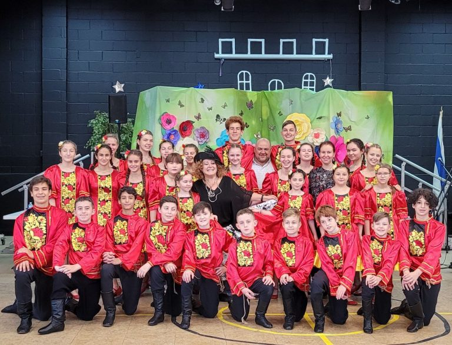

Folk Dance Club

Dance school · Est. 2016
Learn, rehearse and perform dances from around the world. A Brooklyn home for young dancers, curious minds and a love of movement.
The Folk Dance Club is a business and the flagship project of Multicultural Center Kaleidoscope, a nonprofit. The two share a team and an address.